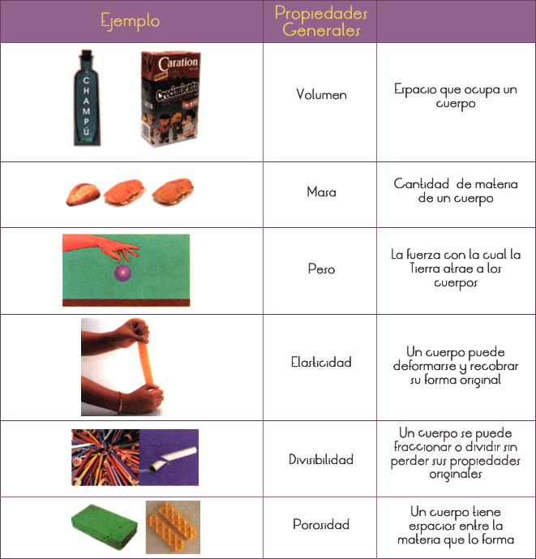
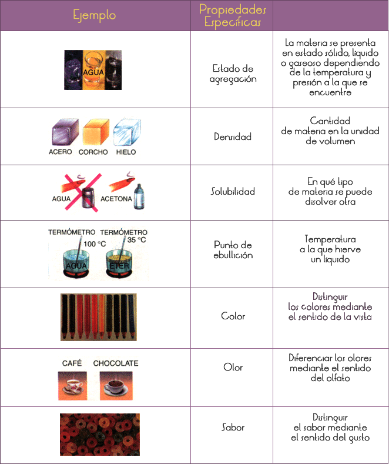
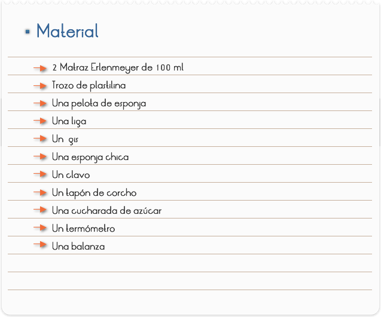
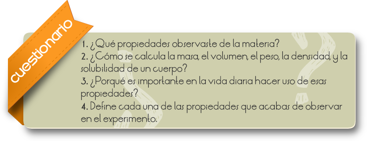
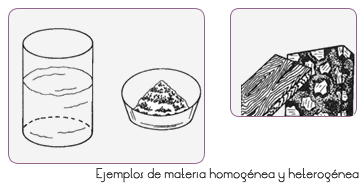
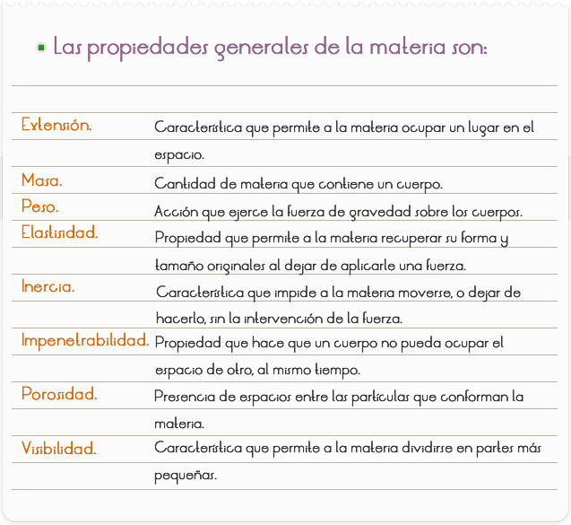

Introducción
Las propiedades que presentan las sustancias se conocen como propiedades generales y las propiedades especiales de cada sustancia se conocen como propiedades específicas.
PROPIEDADES GENERALES DE LA MATERIA

PROPIEDADES ESPECÍFICAS DE LA MATERIA

En un experimento es importante observar las propiedades generales y específicas de un cuerpo, así como los cambios en estas propiedades cuando se modifica algún factor.
Objetivo
Que el alumno aprenda a diferenciar entre propiedades generales y específicas de la materia.

1. Para observar el volumen que ocupa el agua agrega 50 ml de esta a un matraz Erlenmeyer y observa cuidadosamente.
2. Elabora una figura cúbica con la plastilina, ésta te dará idea de la masa de un cuerpo.
3. Con la pelota de esponja trata de calcular su peso y después mide su peso real con la balanza.
4. Toma la liga y estírala lo más que puedas, con esto observaras la propiedad de elasticidad.
5. Corta el gis en varios trozos, con ello comprobarás que la materia se puede dividir.
6.)Observa la esponja minuciosamente, podrás darte cuenta de que esta llena de poros, que es otra característica de la materia.
7.)Compara el clavo y el tapón de corcho, te darás cuenta que cada uno de ellos tiene una densidad diferente.
8.)Coloca un poco de agua nuevamente en el matraz Erlenmeyer y disuelve un poco de azúcar y observa.
9.)Calienta el matraz con el agua azucarada y toma su temperatura.

Comentarios
Todo lo que nos rodea, incluyendo a los seres vivos, es materia. La materia es todo lo que ocupa un lugar en el espacio. Se puede medir y pesar, y encontrar en diversos estados: sólido, líquido y gaseoso.
La materia se clasifica en homogénea y heterogénea.
La materia homogénea es la que presenta una composición uniforme, en la cual no se pueden distinguir a simple vista sus componentes; en muchos casos, no se distinguen ni con instrumentos como el microscopio. Por ejemplo: el agua, la sal, el aire, la leche, el azúcar y el plástico.
La materia heterogénea es aquella cuyos componentes se distinguen unos de otros, tal es el caso de la madera, el mármol, una mezcla de agua con aceite, o bien de frutas, entre otros.

La materia presenta diversas propiedades que la caracterizan, algunas de ellas identifican a toda la materia, por ello se les llama propiedades generales; otras, como las propiedades particulares de la materia sólida, precisan ciertas características de un grupo; y las que determinan las diferencias entre una sustancia y otra se llaman propiedades específicas.
